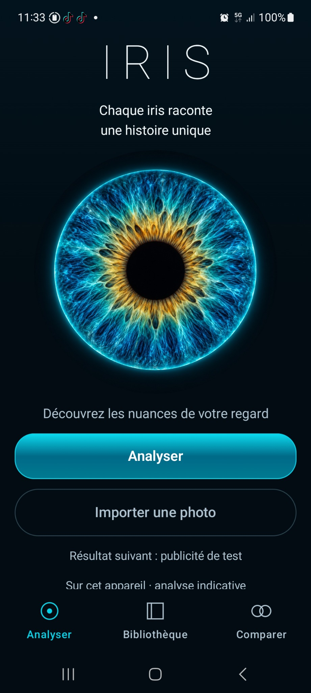
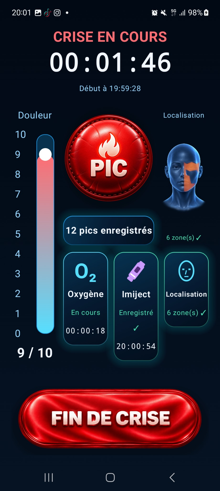
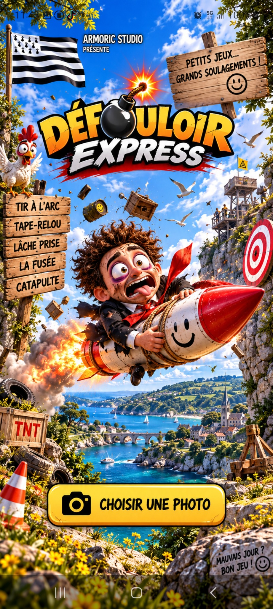
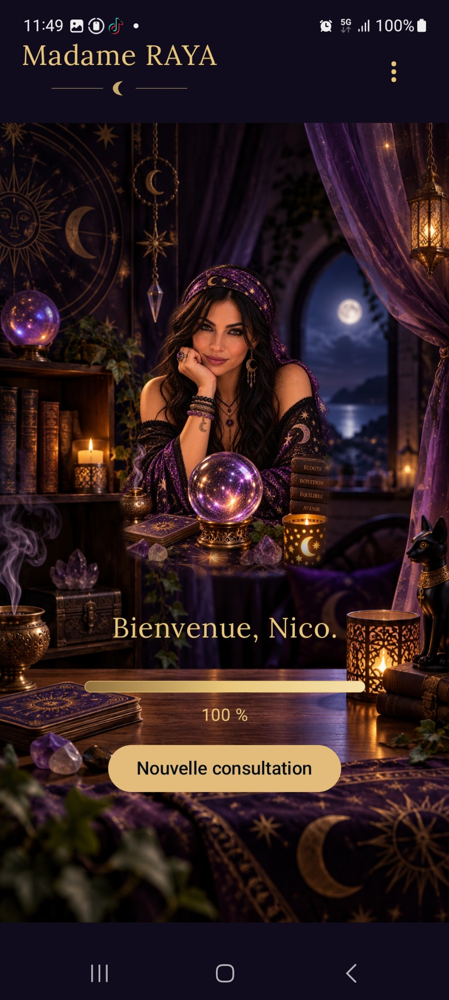

Analyse visuelle
IRIS
Analysez les nuances de votre iris, visualisez sa cartographie chromatique, conservez vos résultats et comparez deux iris.
Analyse locale900 directionsComparaison
Découvrir IRIS →🧪 Devenez bêta-testeurApplications mobiles et expériences originales développées avec une attention particulière portée au design, à la simplicité et au respect de l'utilisateur.
Découvrir les créationsQuatre projets, quatre identités. Découvrez chaque application et ses fonctionnalités.

Analysez les nuances de votre iris, visualisez sa cartographie chromatique, conservez vos résultats et comparez deux iris.

Suivez simplement vos crises d’algie vasculaire de la face, conservez un historique précis et générez des rapports structurés.

Une photo, un « Relou » et cinq mini-jeux décalés pour transformer les petits agacements en partie rapide et humoristique.

Une expérience de voyance conversationnelle immersive, avec moteur local, mémoire et une ambiance visuelle conçue comme un véritable cabinet.